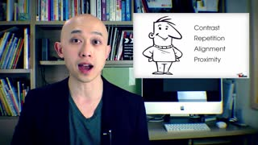

下列时间来自 CTC；结构检查与实际听审分别记录。本页不自动批准任何词时。参考帧按真实解码 PTS 选取，只展示视频上下文；不证明它们对应模型官方视觉特征行。
原文：Applying these four design concepts to your presentations is simple, easy and will make people think you turned into a design guru.
音频起点 0.000000s；视频时长 14.000s；边界/顺序异常 0。复核后填写 data/review/word_times.csv 的审核列，再运行 map 和 report。

| word_id | 原词 | 候选区间 | 状态 | 播放 |
|---|---|---|---|---|
| 0 | Applying | 0.337–0.883s | 主文本证据 · 待听审 / algorithm_accepted | |
| 7 | presentations | 2.968–3.771s | 主文本证据 · 待听审 / algorithm_accepted | |
| 9 | simple, | 4.348–4.798s | 主文本证据 · 待听审 / algorithm_accepted | |
| 10 | easy | 5.148–5.664s | 主文本证据 · 待听审 / algorithm_accepted | |
| 1 | these | 0.883–1.171s | 待听审 / algorithm_accepted | |
| 2 | four | 1.171–1.460s | 待听审 / algorithm_accepted | |
| 3 | design | 1.460–1.877s | 待听审 / algorithm_accepted | |
| 4 | concepts | 1.877–2.712s | 待听审 / algorithm_accepted | |
| 5 | to | 2.712–2.808s | 待听审 / algorithm_accepted | |
| 6 | your | 2.808–2.968s | 待听审 / algorithm_accepted | |
| 8 | is | 3.832–4.348s | 待听审 / algorithm_accepted | |
| 11 | and | 5.790–6.306s | 待听审 / algorithm_accepted | |
| 12 | will | 6.306–6.787s | 待听审 / algorithm_accepted | |
| 13 | make | 6.787–6.980s | 待听审 / algorithm_accepted | |
| 14 | people | 6.980–7.140s | 待听审 / algorithm_accepted | |
| 15 | think | 7.140–7.461s | 待听审 / algorithm_accepted | |
| 16 | you | 7.461–7.686s | 待听审 / algorithm_accepted | |
| 17 | turned | 7.686–7.846s | 待听审 / algorithm_accepted | |
| 18 | into | 7.846–8.151s | 待听审 / algorithm_accepted | |
| 19 | a | 8.151–8.232s | 待听审 / algorithm_accepted | |
| 20 | design | 8.232–8.392s | 待听审 / algorithm_accepted | |
| 21 | guru. | 8.392–8.938s | 待听审 / algorithm_accepted |